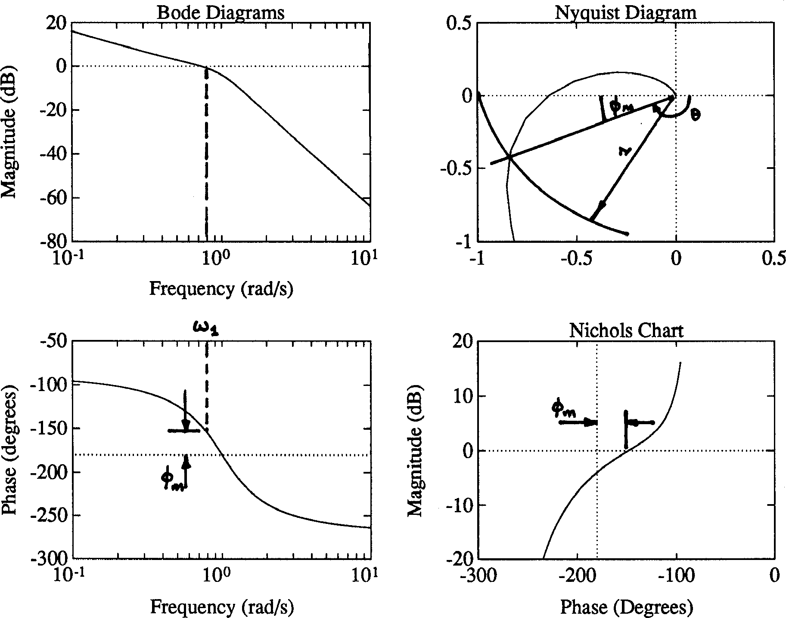
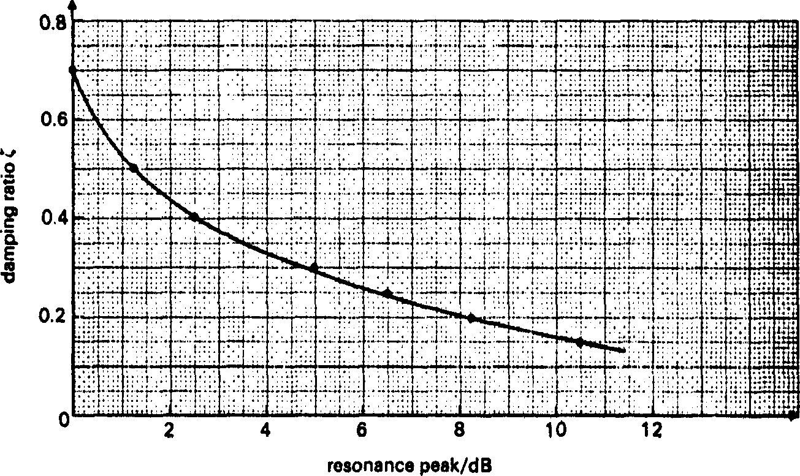

4. Design Criteria¶
4.1 Steady-State Criteria¶
These criteria are measures of the ‘tracking accuracy’ and robustness of control systems.
4.1.1 Type 0 systems: position constant (\(K_p\))¶
For the simple, unity-gain feedback system shown in Figure 2 the error is given by1
For a type 0 system, the position constant, \(K_p\) is the d-c open loop gain:
and implies a steady state error of
following a unit step input. Thus a large position constant implies a small steady state error. For a type 1 control system \(G_o(s)\) contains an integration so that \(K_p = \infty\) and the error tends to zero.

Unity gain feedback control system
4.1.2 Type 1 systems: velocity constant (\(K_v\))¶
For the same system,
The steady state position error for a constant velocity input is \(1/K_v\), so a large velocity constant implies a small steady-state error. For a type 2 system \(G_o(s)\) contains two integrations so that \(K_v = \infty\) and the error to a constant velocity input tends to zero.
4.1.3 Type 2 systems: acceleration constant (\(K_a\))¶
Similarly
but this is not often specified.
4.1.4 Compliance¶
For the system illustrated in Figure 3, with a disturbance \(W(s)\), the error is given by
The compliance is the steady-state error following a unit step change in \(W(s)\). A small compliance requires \(D(s) \gg 1\) and zero compliance is obtained when \(D(s)\) contains an integrator.

Figure 3 Compliance
4.1.5 Sensitivity¶
The sensitivity is the proportional variation in the closed-loop system caused by a variation in one of the open-loop components. A system will always be sensitive to variations of input, feedback and feed-forward paths, but the sensitivity to variations in the forward path is reduced by a factor of \(1/(1 + \mathrm{loop\;gain})\).
4.2 Time Domain Criteria¶
The time domain criteria defined below are derived from the model second order under-damped output response to a step input shown in Figure 4. Similar criteria may be defined from the impulse or ramp response. The performance measures are related to the s-plane via the pole-zero diagram shown in Figure 5 where the poles are solutions of the equation
and \(\alpha\), \(\sigma\) and \(\omega_d\) are defined as

Figure 4 Model second-order under-damped step response
Figure 5 Location of second-order complex poles
4.2.1 Percentage overshoot (\(M_p\))¶
Maximum difference between transient and steady state response to a unit step input. A measure of relative stability. Often quoted as a percentage of the final value of the response.
Design values: \(M_p\) should be kept below 40% and < 25% is usually required. For a second order system (or a system with a pair of dominant complex poles) \(M_p\) may be related to the damping ratio \(\zeta\) by the equation
A plot of this curve is shown in Figure 6.
A useful approximation to \(M_p\) is given by the straight-line equation:

Figure 6 Plot of the peak overshoot \(M_p\) versus the damping ratio \(\zeta\) for the second-order system
4.2.2 Rise time (\(t_r\))¶
Usually defined as the time taken for the response to rise from 10% to 90% of its final value. A measure of the speed of response of the system. Figure 7 shows the relationship between normalised rise time and the damping ratio \(\zeta\).
Design values: For a second order system (or a system with a pair of complex dominant poles) rise time may be related to the natural frequency \(\omega_n\) by
For process control, the step response is often over-damped and an alternative definition of rise time for such a response is illustrated in Figure 8.

Figure 7 Normalised rise time vs damping ratio for a second order system

Figure 8 Typical process response curve
4.2.3 Settling time (\(t_s\))¶
Usually defined as the time taken for the response to reach and remain within some percentage of its final (steady-state) value (often 1, 2, or 5%). This parameter is related to the real part of the dominant poles \(\sigma = \zeta\omega_n\). Figure 9 shows the relationship between settling time and damping ratio for 5% settling time.
Figure 9 Normalised 5% settling time vs damping ratio for a second order system
Design values: For a second order system (or a system with a pair of dominant complex poles) rise time may be related to \(\sigma\) by
Table 1 Typical settling time values
Percentage of final value |
1% |
2% |
5% |
10% |
|---|---|---|---|---|
Settling time \(t_s\) seconds |
4.6/\(\sigma\) |
3.9/\(\sigma\) |
3/\(\sigma\) |
2.3/\(\sigma\) |
Other parameters sometimes given are
4.2.4 Delay time (\(t_d\))¶
Usually defined as the time taken for the response to reach 50% of its final value. An alternative definition favoured for process control (under-damped responses) is illustrated in Figure 8.
4.2.5 Predominant time constant (\(\tau\))¶
Sometimes given as an alternative to \(t_s\). The exponential envelope of the second order response decays to 37% of its final value in \(\tau\) seconds.
Design values: for a second order system (or a system with a pair of dominant second order poles)
The second order parameters \(\zeta\) and \(\omega_n\) may also be given as figures of merit. They can be useful in the design of higher order systems.
4.3 Frequency Domain Criteria¶
Frequency domain specifications are usually given in terms of the steady-state response of a system to a sinusoidal input.
4.3.1 Gain margin (GM)¶
A measure of relative stability. It is defined as the reciprocal of the magnitude of the open-loop transfer function evaluated at the frequency \(\omega_\pi\), at which the phase angle is \(-180^\circ\) (\(-\pi\) radians). That is
where \(\angle GH(j\omega_\pi) = -180^\circ = -\pi\) radians.
\(\omega_\pi\) is called the ‘phase-cross-over frequency’. See Figure 10 for an illustration of gain margin determination from frequency response data.
Design values: for absolute stability we require \(\left\|GH(j\omega_\pi)\right\| < 1\) or GM > 1 (0 dB). Typical values are 3dB < GM < 8dB.
Figure 10 Determination of gain margin (GM) from frequency response diagrams
4.3.3 Phase margin (PM or \(\phi_m\))¶
Another measure of relative stability. It is defined as \(180^\circ\) plus the phase angle \(\phi\) of the loop-transfer function at unity gain. That is
where \(GH(j\omega_1) = 1\) (0 dB). Frequency \(\omega_1\) is called the gain cross-over frequency. See Figure 11 for illustration of phase margin determination from frequency response data.
Design values: for absolute stability we require \(GH(j\omega_1) < 180^\circ\) or \(\phi_m > 0^\circ\). Typical values used are \(\phi_m > 30^\circ\), preferably \(45^\circ < \phi_m < 60^\circ\).
Note that if the Nyquist diagram is of the form illustrated in Figure 11, then \(\phi_m\) is related to the damping ratio \(\zeta\) by the curve illustrated in Figure 12, for which \(\zeta \approx \phi_m/100\).

Figure 11 Determination of phase margin (\(\phi_m\)) from frequency response diagrams
Figure 12 Figure 12 Damping ratio \(\zeta\) versus phase margin \(\phi_m\)
4.3.4 Band-width (\(\omega_\mathrm{BW}\))¶
A measure of the speed of response of a system. In control systems, this is defined as the frequency at which the magnitude ratio \(C(j\omega)/R(j\omega)\) is 3 dB down from the magnitude at \(\omega = 0\). The frequency \(\omega_\mathrm{BW}\) is then equal to the cut-off frequency \(\omega_c\). See Figure 13. Note that for a second-order underdamped system, \(\omega_\mathrm{BW}\) is approximately equal to \(2\omega_1\), where \(\omega_1\) is the gain cross-over frequency.

Figure 13 Typical second-order closed-loop frequency response
4.3.5 Cut-off rate¶
The rate at which the magnitude ratio decreases beyond cut-off. E.g. 6 dB/octave = 20 dB/decade.
4.3.6 Resonant peak (\(M_\mathrm{max}\))¶
A good measure of stability, maximum value of the closed-loop frequency response (see Figures 13 and 14).
Design values: a useful rule-of thumb is \(M_\max =\| C(j\omega_1)\|/\|R(j\omega_1)\|\). That is the closed-loop resonant peak occurs at about the open-loop gain cross-over frequency. A more accurate value can be obtained by finding the M-circle that is tangential to the Nyquist curve (see Section 2.3). We usually require \(M_\max < 2\) (6 dB), preferably \(M_\max < 1.3\) (2.3 dB).
4.3.7 Resonant frequency (\(\omega_p\))¶
The frequency \(\omega_p\) at which \(M_\max\) occurs.
A final frequency response criterion sometimes encountered is
4.3.7 Delay time (\(T_d\))¶
A measure of the speed of response is given by
where \(\gamma = \angle C(j\omega)/R(j\omega) = \) phase of closed-loop frequency response. The average value of \(T_d(\omega)\) of the frequency range of interest is usually specified.

Figure 14 Relationship between resonant peak \(M_\max\) and damping ratio \(\zeta\)
for more general systems with desired output \(C(s)\) and demanded output \(R(s)\) the formula \(E(s) = R(s) - C(s)\) must be used to derive a relationship between \(E(s)\) and \(R(s)\).